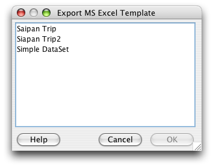

The WorkBench is a staging area for pre-cataloged collections data and is not intended as a replacement for editing MS Excel row and column data. However, when creating MS Excel spreadsheets, it is recommended that the column headings match the Specify 6 fields. This will ensure the that data will import correctly into the WorkBench and ultimately into Specify 6. To streamline this process, the WorkBench allows Data Set column headings to be exported as an MS Excel Template.
The WorkBench will not allow an open Data Set to be exported. If a Data Set is disabled in the Sidebar it must be closed in the Workspace before it can be exported.
The fastest way to export the Data Set column headings is to 'drag and drop' the Data Set item onto the 'Export Excel Template' action in the Sidebar. This eliminates the need to choose a Data Set to export.
Or, click the 'Export Excel Template' action in the Sidebar. This will open the following dialog:

Export MS Excel Template
Choose a Data Set from in the list and click 'OK'.
Next, the file save dialog will appear:
Enter Export File Name
Then select a location and enter a name for the new MS Excel file and click 'Save'.